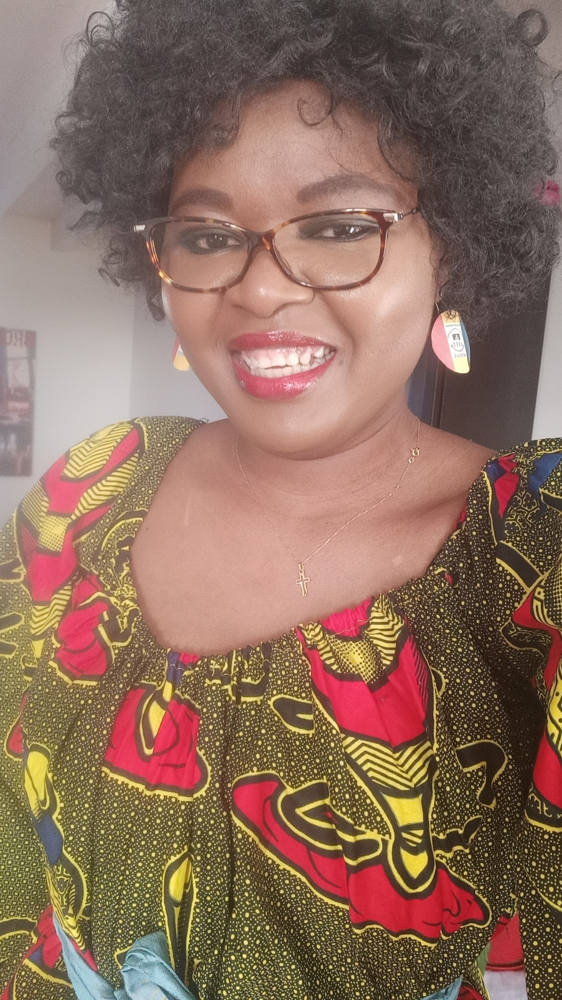

Bienvenu(e) sur mon Portfolio !
Je suis Félicité MBEY KOUMATEY, développeuse web et présidente-fondatrice Association Nebgue, humanitaire internationnale qui intervient au faveur des enfants au Tchad.
J'aime tricoter les chaussons pour les poupées, ce qui me permet d'être minitieuse, patiente et concentrée.
